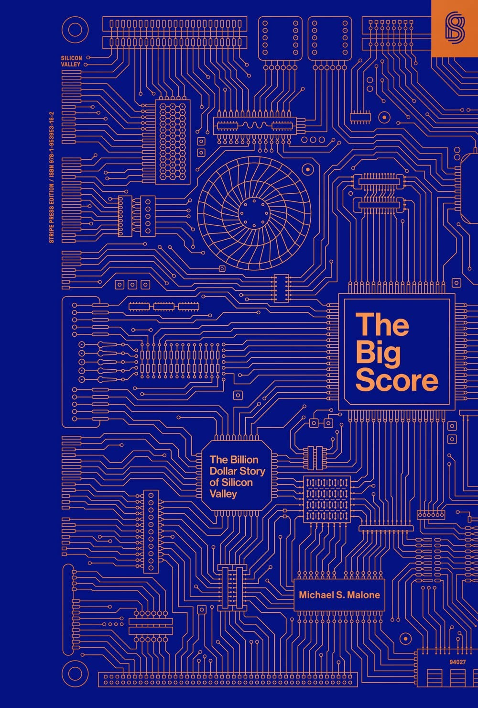

迈克尔·S. 马龙（Michael S. Malone）写这本书时，硅谷还没有被神话。1985年由 Doubleday 出版的《大赢家》，是关于硅谷诞生的唯一一部同时代记录——书里写到的很多公司当时还没上市，很多故事还没有结局。马龙有资格写：他先在惠普做公关，随后进入《圣何塞信使报》（San Jose Mercury News）跑电子产业口，是美国第一批在日报上专职报道科技的记者之一。他就住在帕洛阿尔托，笔下的工程师、创始人和推销员往往是他采访过、认识甚至打过交道的人。
全书从1930年代半导体的源头讲起——惠普在帕洛阿尔托的车库起步，肖克利（William Shockley）带着晶体管发明者的光环回到故乡创办肖克利半导体，随后一批年轻人出走另立门户，催生了仙童半导体（Fairchild Semiconductor），再从仙童裂变出英特尔（Intel）、国家半导体（National Semiconductor）、AMD 这一整条"硅谷家谱"。马龙为诺伊斯（Bob Noyce）、摩尔（Gordon Moore）、乔布斯（Steve Jobs）、吉恩·阿姆达尔（Gene Amdahl）等人写下同时代的人物速写，也不放过雅达利（Atari）和苹果这样把芯片变成消费狂潮的公司。书里有一段把电子游戏比作呼啦圈——一种转瞬即逝的大众玩具——这种带着记者冷眼的比喻，正是它区别于日后各种造神传记的地方。
《大赢家》真正的分量在它的另一半。多数硅谷史只写创新与财富，马龙却用大量篇幅写这场淘金对人的侵蚀：疯狂加班的生活方式如何摧毁婚姻和家庭，工厂流水线上的蓝领与"灰领"处境，可卡因等毒品在工程师中的蔓延，芯片被撬走转卖的灰色市场，以及企业之间近乎谍战的商业间谍。写作时的1985年恰逢半导体行业第一次大衰退，这种由盛转衰的现场感，让全书没有落入一味歌颂的窠臼。
这本书长期绝版、成了收藏市场上抢手的初版书，直到 Stripe Press 重新出版才重回大众视野。eBay 首任总裁杰夫·斯考尔（Jeff Skoll）称马龙"captured the essence of Valley culture and the many outsize personalities who helped create this mecca of tech"（捕捉到了硅谷文化的精髓，以及那些造就这块科技圣地的众多张扬人物）。ASK 集团创始人桑迪·库尔茨格（Sandy Kurtzig）把马龙称作"讲述硅谷历史的黄金标准"（the gold standard for telling Silicon Valley's history）。斯坦福大学荣休校长、Alphabet 董事长约翰·轩尼诗（John Hennessy）则指出，此书记录了一场从半导体到风险投资兴起的技术变革的开端。对想理解硅谷为何成为硅谷的读者而言，它的价值不在于事后诸葛式的总结，而在于它保留了一个尚未知道自己会赢的时刻——财富、野心与代价同时摆在桌面上，结局未定。